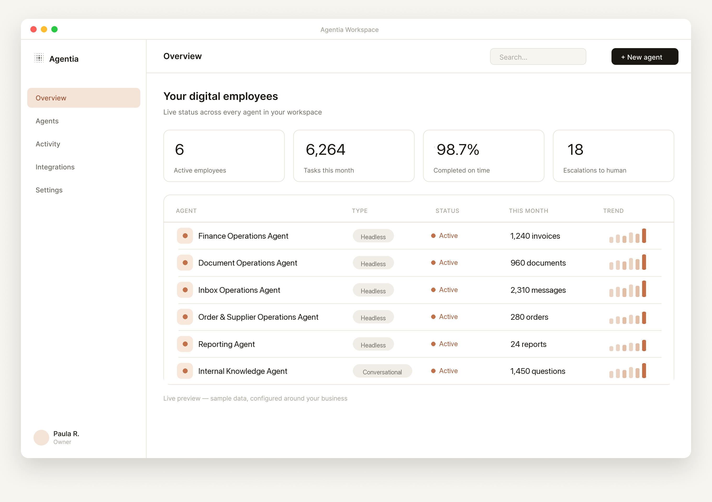

Aprobación humana cuando hace falta
Las decisiones sensibles se validan antes de ejecutarse.
Diseñamos y creamos tu primer empleado de IA para ventas, soporte, operaciones o cualquier proceso concreto de tu empresa, gestionado por Agentia desde el primer día.
No construimos automatizaciones sueltas. Diseñamos, implementamos y operamos el ciclo de vida completo de tu workforce digital, conectado a tus sistemas y medido por resultados.
Identificamos los jobs y cuellos de botella con más impacto.
Definimos roles, instrucciones, herramientas, límites y supervisión.
Conectamos empleados digitales a tus sistemas y procesos reales.
Gestionamos excepciones, calidad y evolución continua.
Seguimos unidades de trabajo, tiempo liberado e impacto real.
Siempre activaLos más potentes hacen ambas cosas. Un mismo sistema puede hablar con un cliente o con tu equipo y, cuando necesita ejecutar, activar agentes headless en segundo plano.
Recogen contexto, resuelven dudas y, cuando hace falta ejecutar, activan trabajo real sin sacar a la persona de la conversación.

Consultan datos, procesan documentos, actualizan sistemas, preparan respuestas y completan tareas de principio a fin.

Control y seguridad desde el primer día
Las decisiones sensibles se validan antes de ejecutarse.
Cada agente accede solo a la información que necesita para hacer su trabajo.
Puedes revisar acciones, datos utilizados, aprobaciones y resultados en cualquier momento.
Elegimos la tecnología adecuada para cada caso, sin atarte a una única plataforma ni complicar tu operación.
Agentia Workspace
Tu espacio privado para supervisar la workforce digital de tu empresa. Desde Agentia Workspace ves qué empleados digitales están activos, qué trabajo han completado, dónde necesitan ayuda y qué impacto de negocio están generando.

Ve quién está trabajando, en qué procesos y con qué nivel de carga.
Consulta qué casos, tareas o unidades de trabajo se han cerrado.
Revisa dónde hace falta criterio humano y entra solo cuando aporta valor.
Detecta qué flujos están devolviendo más capacidad a tu equipo.
Mide productividad, tiempos, coste manual evitado y resultados operativos.
Sectores donde ya estamos trabajando
Ahí la agentificación libera capacidad rápido: procesos repetitivos, atención operativa y tareas de coordinación donde el impacto se nota desde el primer caso de uso.
Qué parte agentificar primero
Responder leads en minutos, cualificarlos, agendar reuniones, actualizar el CRM y preparar el siguiente paso comercial.
Responder consultas, clasificar incidencias, buscar información y escalar al equipo con todo el contexto.
Leer facturas, revisar documentos, preparar informes y coordinar aprobaciones sin perseguir a nadie manualmente.
Coordinar estados, actualizar sistemas, preparar comunicaciones y escalar incidencias con el contexto ya resuelto.
Buscar respuestas en documentos internos, resumir información y preparar informes sin perder horas navegando carpetas.
Solicitar datos, validar peticiones, coordinar aprobaciones y hacer seguimiento de compras o pagos pendientes.